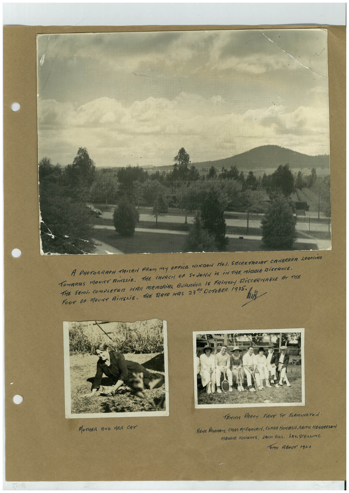

Book 1 · scan 034


Description
Transcription
Context
Review notes
Compare the machine draft with the scan. Handwriting and names need human review.
Artifacts
Edit the artifacts field in this note’s frontmatter to change these records. This summary is generated.
B01-S034-A01 — Photo & Handwritten note — Book 1, scan 034
Types: Photo, Handwritten note
Scope: Whole scanned page; individual items can be split out during review.
Caption: Not mapped yet.
Caption source: Not recorded yet.
Caption status: unmapped
Machine transcription
A PHOTOGRARM TRITEN FROM MY OFFICE MINION NO.1. SECRETARIAT CANBERRA LOOKING TOWARDS MOUNT RiNSLiE. THE CHURCH OF STOOHA IS iN THE MiDDLE DiSTANCE. THE SEMi- COMPRETER WAR MEMORIAL BUiLDiNG iS FRiNTRY DiSCERNABLE AT THE FOOT DR MOUNT RiMERiE, THE TATE MAS 23%. OCTOBER 1985° MI MOTHER AND HER CAT TEMPTIS PARTY IENT ST FLEMINOTOA. REnE PRIgHAM, CHAS MCFARYEN, CARRE HOMARA, KEITH HENRERSON MRGGIE KNIGHTS, JACK GILL. LES.STELLING Tome ABouT 19=0